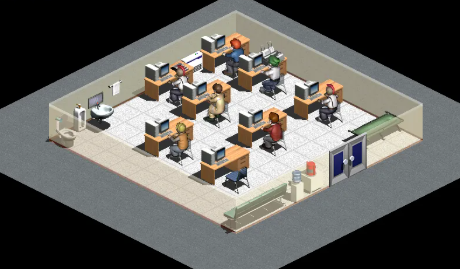

클로드 코드 운영 현황 및 사업 방향 메모 — 운영기획팀

사무동은 정상 가동 중입니다. 이번 보고는 두 가지를 다룹니다 — 클로드 코드를 운영하는 방법과, 사업·업무 방향에 대한 제언입니다. 아직 도구가 손에 익지 않은 것은 자연스러운 과정이니 조급해할 필요는 없습니다.
R3 갱신사항 — 전체 대화 기록을 바탕으로 본문을 상세 서술형으로 확장(클로드 코드 가이드 약 2,300자 · 사업 방향 메모 약 3,000자, 합산 5,300자 이상). 저장소(GitHub) · 아티팩트 · 사내 미러(docs/advice) 3개소 동기화 완료.
지금까지 이 컴퓨터에서 함께 한 일을 돌아보면, 처음엔 빈 폴더 하나(harness_test)였던 곳에 깃 저장소를 연결하고, 그 안에 다른 프로젝트를 시작할 때마다 그대로 복제해서 쓸 수 있는 "시작 템플릿"을 만들었습니다. 이 과정 자체가 클로드 코드를 잘 쓰는 법을 그대로 보여줍니다. 오늘 나눈 대화 전체를 훑어보면, 결국 좋은 결과는 화려한 한 번의 명령이 아니라 이런 작은 습관들이 쌓여서 만들어진다는 걸 알 수 있습니다.
첫째, 역할을 나눠 맡기는 법입니다. 지금 이 저장소의 .claude/agents 폴더에는 여섯 개의 역할이 들어 있습니다 — 읽기 전용으로 계획만 짜는 planner, 정해진 범위만 구현하는 coder, 실제로 실행해서 통과·실패를 확인하는 tester, 코드는 건드리지 않고 리뷰만 하는 reviewer, 에러를 재현해서 근본 원인을 찾는 debugger, 문서를 실제 상태에 맞게 정리하는 doc-updater입니다. 이 여섯을 한 번에 순서대로 지휘하는 명령이 /orchestrate입니다. 다만 간단한 작업까지 매번 이 팀을 다 부르면 오히려 느려집니다. 몇 줄짜리 수정이나 질문은 직접 하고, 조사할 게 많거나 여러 단계를 거쳐야 하는 일에만 팀을 부르는 편이 맞습니다.
둘째, 매번 새로 설명하지 않아도 되는 약속들입니다. 오늘 .claude/commands에 넣은 /commit·/catchup·/todos·/code-review·/pr-description이 그 예입니다. 예를 들어 며칠 뒤 다시 돌아와서 그동안 무슨 일이 있었는지 모르겠다 싶으면 /catchup 한 마디면 최근 커밋과 변경 내역을 읽고 요약해 드립니다. 한 번에 다 외우려 하지 말고, 이번 주엔 /commit, 다음 주엔 /catchup 하는 식으로 하나씩 손에 익히는 게 낫습니다.
셋째, 큰 작업 앞에서는 Plan 모드를 먼저 쓰는 습관입니다. 오늘 하네스 템플릿을 어떤 구조로 만들지 정할 때도, 먼저 두 가지 방향(템플릿 저장소 vs 멀티 프로젝트 작업공간)을 제시하고 어느 쪽을 원하시는지 여쭤본 뒤에야 실제로 파일을 옮기고 구조를 바꿨습니다. 계획 없이 바로 손을 대면, 나중에 통째로 다시 뜯어고쳐야 하는 경우가 많습니다.
넷째, 기억하는 기능입니다. 오늘 나눈 대화의 맥락과 "회사 보고서 형식으로, 사진과 같은 톤으로" 같은 구체적인 요청들은 계속 남아서 다음에 다시 설명하지 않아도 이어집니다. 혹시 잘못 기억한 부분이 있으면 그때그때 바로잡아 주시는 게 정확도를 높이는 가장 빠른 방법입니다.
다섯째, 되돌리기 힘든 명령은 특히 조심해야 합니다. 오늘 만든 .claude/settings.json에는 git reset --hard, force push, rm -rf 같은 명령을 차단 목록에 넣어뒀습니다. 이런 명령은 실행 전 항상 한 번 더 확인하는 습관을 들이시길 권합니다.
여섯째, 자동화는 신중하게 다뤄야 합니다. 오늘 이 컴퓨터에 로그인 시·매일 8시 자동 실행을 설정하려 했을 때, 자동 모드가 "지속적으로 남는 실행 항목을 만드는 작업"이라며 한 번 멈춰 세우고 직접 승인을 구했습니다. 편의를 위한 자동화일수록, 한 번은 꼭 사람이 확인하고 넘어가는 편이 안전합니다.
일곱째, 대화가 길어지면 지난 내용이 자동으로 요약되니, 새로 시작하지 않아도 하던 작업을 그대로 이어갈 수 있습니다. 그리고, 지금 CLAUDE.md에 프로젝트 개요와 구조가 아직 "작성 예정"으로 비어 있는데, 시간 나실 때 몇 줄만 채워 두시면 다음 작업의 속도와 정확도가 눈에 띄게 좋아집니다.
여덟째, 위험도가 높은 작업에는 별도의 확인 절차를 마련해 두었습니다. 배포나 데이터베이스 마이그레이션처럼 되돌리기 어려운 변경에는 reviewer 서브에이전트만으로는 부족할 수 있어서, .claude/skills/cross-verify라는 스킬을 따로 만들어 뒀습니다. 이 스킬은 다른 세션이 독립적으로 같은 작업을 다시 검토하게 하는 방식인데, 부작용(다른 세션에 메시지를 보내는 것)이 있는 만큼 자동으로는 절대 실행되지 않고, 사용자가 직접 /cross-verify라고 불러야만 움직입니다. 위험한 일일수록 자동으로 넘어가지 않고 사람이 직접 부르게 만들어 둔다는 원칙이, 여기서도 그대로 지켜지고 있습니다.
오늘 함께 만든 이 보고서 페이지도 참고할 만한 예시입니다. 요청하신 디자인 방향을 코드로 옮기기 전에 먼저 색과 글꼴, 레이아웃 계획을 세우고, 실제 업무공간 사진을 그대로 자산으로 올려서 붙여 넣은 뒤에야 최종본을 게시했습니다. "결과물을 먼저 설계하고 나서 만든다"는 이 순서는 코드 작업에도 그대로 적용됩니다.
첫 번째로 드리고 싶은 말씀은, 코드를 다루는 재주와 그걸로 사업을 세우는 역량은 서로 다르다는 것입니다. 재주는 씨앗일 뿐이고, 그 씨앗을 심고 물 주고 볕을 가려주는 일은 완전히 다른 기술입니다. 오늘 하루만 봐도 저장소를 만들고, 권한 규칙을 정하고, 팀 역할을 나누고, 디자인을 맞추는 여러 갈래의 일을 하셨는데, 이 중 어느 하나를 잘한다고 나머지가 저절로 따라오지는 않습니다. 각각을 따로 인정하고 따로 연습하시길 권합니다. 코드를 짓는 재주는 혼자서도 늘릴 수 있지만, 그 결과물을 사람들에게 필요한 형태로 다듬어 내놓는 일은 시장의 반응을 보면서 계속 고쳐 나가야 하는 별개의 훈련이라는 점을 기억해 두시면 좋겠습니다.
두 번째로, 지금 만들고 계신 이 방식 자체가 이미 하나의 자산입니다. 계획을 세우고(Plan 모드), 좁은 범위로 실행하고(coder), 실제로 돌려서 확인하고(tester), 다시 한번 읽어보는(reviewer) 흐름, 그리고 무언가 자동으로 남는 걸 만들 때마다 한 번 더 확인받는 습관, 이런 것들을 다듬어서 이름 붙이고 남에게 보여줄 수 있게 정리해 두면, 오늘 혼자 쓰던 방식이 내일은 다른 사람에게 가르치거나 팔 수 있는 하나의 상품이 될 수 있습니다. "운영팀"이라는 이름을 붙이고 매일 아침 스스로에게 보고서를 띄우기로 한 오늘의 결정도, 바로 이 방향의 첫걸음입니다.
세 번째로, 실제로 사람을 뽑아 팀을 꾸리실 때도 오늘 만든 구조를 그대로 참고하시면 좋겠습니다. planner, coder, tester, reviewer, debugger, doc-updater처럼 역할과 권한 범위를 먼저 명확히 나눠두면, 나중에 "이건 누구 담당이었지" 하고 부딪히는 일이 줄어듭니다. 계획하는 사람과 실행하는 사람, 검증하는 사람을 굳이 한 사람에게 다 맡기지 않는 것도 같은 이유입니다. 처음엔 혼자 여러 역할을 겸하더라도, 규모가 커지면 이 경계를 미리 그려둔 팀이 훨씬 덜 흔들립니다.
네 번째로, 서두르지 않으셨으면 합니다. 오늘도 처음부터 완벽한 걸 만들려 하지 않고, 빈 폴더 하나에서 시작해 필요한 걸 하나씩 채워 넣으셨습니다. 사업도 똑같습니다. 기능을 열 개 갖춘 큰 상품보다, 하나를 확실히 풀어주는 작은 도구가 먼저 사람의 마음을 얻습니다. 오늘 만든 보고서도 처음엔 짧은 메모 한 장이었다는 걸 기억해 주세요. 지금 만들고 있는 이 보고서 시스템도, 완성형을 미리 그려두기보다는 오늘처럼 써보면서 필요한 부분만 조금씩 넓혀가는 방식이 맞습니다.
다섯 번째로, 편해질수록 마지막 판단은 더 직접 붙잡고 계셔야 합니다. 오늘 자동 실행 항목을 만들 때, 시스템이 스스로 판단하지 않고 꼭 다시 물어봤던 것을 기억해 주세요. 일을 나눠 맡기는 것과 책임까지 넘기는 것은 다른 일입니다. 사람을 쓰고 도구를 늘려가는 건 좋지만, 누구와 손잡을지, 어디에 돈과 시간을 쓸지, 누구의 말을 믿을지 같은 결정은 마지막 순간까지 직접 정하시길 바랍니다. 일이 잘 풀릴 때일수록 이 원칙이 느슨해지기 쉬우니, 오히려 순조로운 시기에 더 의식적으로 지켜보시길 권합니다.
여섯 번째로, 검증하는 습관을 사업에서도 잃지 마세요. 오늘 몇 번이나 이미지 해시 값을 대조하고, 실제 화면을 다시 확인하고, 저장소와 아티팩트가 서로 같은 내용인지 재차 확인했던 것처럼, 중요한 일일수록 확인하는 절차를 하나 더 두시길 권합니다. 특히 좋은 소식, 달콤한 제안일수록 한 번 더 물어보세요. 나쁜 소식은 스스로 드러나지만, 좋은 말은 확인하지 않으면 한참 뒤에야 크게 터집니다. 계약서 한 줄, 숫자 하나도 마찬가지입니다 — 급할수록 오히려 속도를 늦추고 한 번 더 짚어보는 쪽이 결국 시간을 아끼는 길입니다.
일곱 번째로, 속도를 조절하세요. 지금처럼 하루에 하나씩 새로운 걸 익히고 몸에 붙이면 다음으로 넘어가는 방식이 급하게 열 가지를 한 번에 배우는 것보다 오래갑니다. 일하는 만큼 쉬는 시간도 정해 두시고, 혼자 다 하려 하지 마세요. 잘 맞는 참모 한 명이 도구 백 개보다 나을 때가 있습니다. 오늘처럼 새 기능 하나를 만들고, 검증하고, 저장소에 반영하는 한 사이클을 마쳤으면 거기서 한 번 숨을 고르고 다음 사이클로 넘어가는 리듬을 들이시길 권합니다.
여덟 번째로, 믿음은 재주보다 오래갑니다. 재주로 얻은 기회는 한 번뿐이지만, 신뢰로 쌓은 관계는 계속 돌아옵니다. 작은 부탁을 들어준 사람에게 정성껏 대하는 것이, 잘한다고 소문나는 것보다 결국 더 멀리 갑니다. 오늘 나눈 짧은 대화 하나하나를 허투루 여기지 않고 기록해 다음에도 이어가는 습관 역시, 결국은 같은 신뢰를 쌓는 방식입니다.
아홉 번째로, 문제를 찾을 때는 소문이나 유행보다 실제로 그 일을 겪는 사람의 말을 직접 들으세요. 오늘 하네스 템플릿을 만든 이유도, 결국 매번 새 프로젝트를 시작할 때마다 반복해서 느꼈던 번거로움에서 나온 것입니다. 스스로 겪은 불편함이 가장 정확한 힌트가 될 때가 많습니다. 남이 정리해 둔 시장 조사 자료보다, 오늘처럼 직접 작업하다 막혔던 지점 하나가 훨씬 값진 단서가 됩니다.
열 번째로, 방향을 정할 때는 당장의 이익과 오래 자랑스러울 가치를 함께 생각해 보세요. 둘이 갈릴 때는 조금 손해를 보더라도 후자를 택하는 편이, 몇 년 뒤 돌아봤을 때 더 곧게 뻗은 길로 남습니다. 매일 아침 이 보고서를 읽으실 때마다, 오늘 내린 결정이 그 두 저울 중 어느 쪽에 더 가까웠는지 한 번씩 되짚어 보시길 권합니다.
마지막으로, 결국 이 모든 자동화와 도구가 벌어주는 것은 시간입니다. 매일 아침 이 보고서가 자동으로 뜨는 이유도, 그 시간에 다시 같은 걸 설명하지 않고 더 중요한 질문 — 무엇을 위해 이 일을 하는가 — 에 쓰시라는 뜻입니다. 이 질문만큼은 어떤 도구에도 맡기지 마세요. 재주와 도구는 힘껏 도와드릴 수 있지만, 어디로 갈지는 오직 대표님만 정하실 수 있습니다. 오늘 만든 이 보고서가 그 질문을 매일 한 번씩 다시 떠올리게 해주는 역할을 한다면, 그것만으로도 이 운영팀은 제 몫을 다한 것입니다.